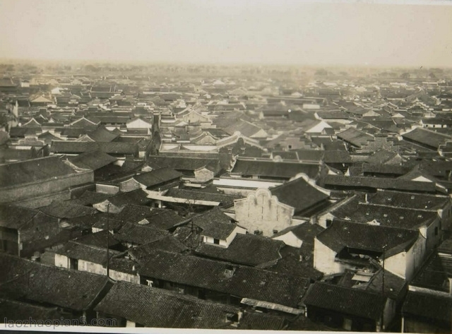

Suzhou has more than 2500 years of history. It was built in the Spring and Autumn Period. For hundreds of years, it was an important place for business and art in China.

Many poets and artists loved Suzhou and wrote poems about it.